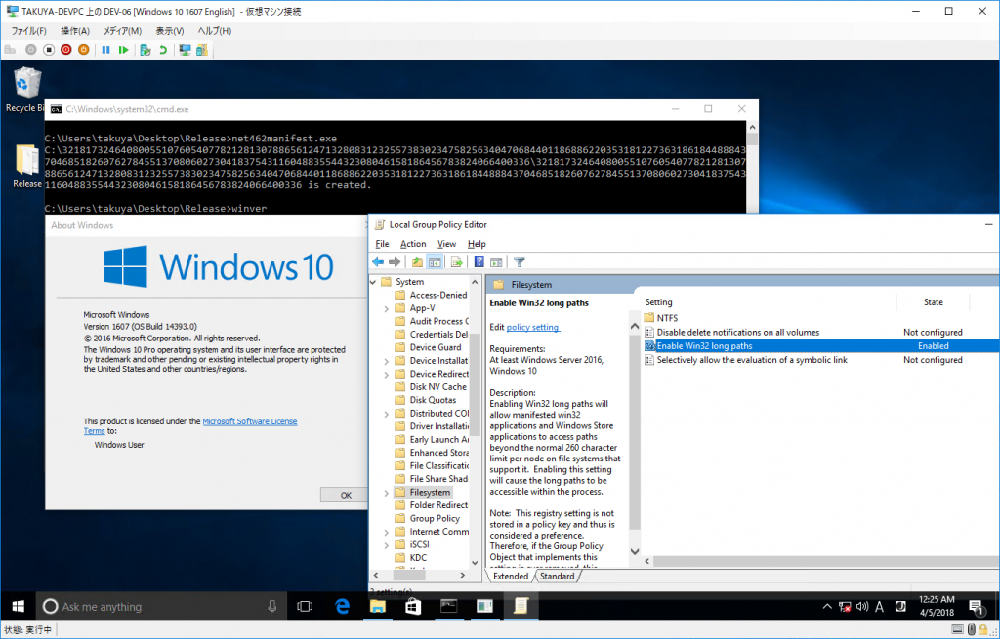

Introduction
以前、開発メモ その9 260文字を超えるパスを有効にするという記事を書いたのですが、どうもCreators Update以降、微妙に挙動が変わっているように見えます。
具体的には、レジストリを有効にし、app.configに設定を追記しても、長いパスが有効にならないのです。
検証は、
- Hyper-V上に英語版のAniversary Update (Winver 1607)**、Creators Update (Winver 1703)**を新規に構築
- ループポリシーで設定を有効にし、かつレジストリに設定が正しく書き込まれていることを確認
- .NET 4.6.2.でビルドし、かつapp.configを用意
それが下記の結果です。

Aniversary Update
同じサンプルを実行させたのに結果が違います。
何故でしょう?
Answer
対応策は、manifestを埋め込む、ということだけです。
埋め込むmanifestは
1 | <application xmlns="urn:schemas-microsoft-com:asm.v3"> |
です。
下記はmanifestを埋め込んだ結果です。
しかし、manifestを埋め込む、ということ自体は以前からMSDNに書いてあったはずです。

{kind=link}
{kind=link}
{kind=link}
上のページの途中の説明です。
A registry key allows you to enable or disable the new long path behavior. To enable long path behavior set the registry key at HKLM\SYSTEM\CurrentControlSet\Control\FileSystem LongPathsEnabled (Type: REG_DWORD). The key’s value will be cached by the system (per process) after the first call to an affected Win32 file or directory function (list follows). The registry key will not be reloaded during the lifetime of the process. In order for all apps on the system to recognize the value of the key, a reboot might be required because some processes may have started before the key was set. The registry key can also be controlled via Group Policy at Computer Configuration > Administrative Templates > System > Filesystem > Enable NTFS long paths. You can also enable the new long path behavior per app via the manifest:
要するに、
レジストリキーが長いパスの新しい扱いの有効/無効を許可します。長いパスの扱いを有効にするために、HKLM\SYSTEM\CurrentControlSet\Control\FileSystem LongPathsEnabled (Type: REG_DWORD) にキーを設定します。キーの値は、影響のあるwin32のファイルまたはディレクトリ関数(後述のリスト)の最初の呼び出し後、システム(プロセス毎)によって、キャッシュされます。レジストリキーはプロセスの生存中は再読込されません。
システム上の全てのアプリケーションにキーの値を認識させるために、いくつかのプロセスは値が設定される前に起動されたがために、システムの再起動を要求されるかもしれません。
レジストリキーはグループポリシーのコンピューターの構成 -> 管理用テンプレート -> システム -> ファイルシステム -> Win32 の長いパスを有効にする によっても制御することが出来ます。
また、マニフェストによっても新しい長いパスの扱いを有効にすることが出来ます。
です。
本文のalsoの係りをみるに、レジストリキーの設定さえあればOKのはずです。
ぶっちゃけ理由がわかりません。
が、manifestを有効にすれば動作しました。
最終的な検証は下記の通り。
| .NET バージョン | ローカルグループポリシー有効 App.configあり/Manifestあり |
ローカルグループポリシー有効 App.configなし/Manifestあり |
ローカルグループポリシー無効 App.configあり/Manifestあり |
ローカルグループポリシー無効 App.configなし/Manifestあり |
|---|---|---|---|---|
| .NET 4.6.2 | OK | OK | DirectoryNotFoundException | DirectoryNotFoundException |
結局、Creators Updateから長いパスを扱うには、
- グループポリシー (またはレジストリ) の設定を有効
- manifestで長いパスを扱えるよう設定
の両方を満たす必要があるようです。